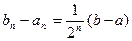

Нехай рівняння (1) має на відрізку
Для знаходження кореня рівняння (1), який належить відрізкові
Метод поділу відрізка навпіл (метод дихотомії).
Нехай рівняння (1) має на відрізку  єдиний корінь. При цьому, функція неперервна на цьому проміжку і .
єдиний корінь. При цьому, функція неперервна на цьому проміжку і .
Для знаходження кореня рівняння (1), який належить відрізкові  виконаємо наступні кроки:
виконаємо наступні кроки:
В результаті дії алгоритму на деякому етапі отримуємо або точний корінь рівняння (1), або нескінчену послідовність вкладених один в один відрізків таких, що (n=1,2,3,…) (2) і 
Оскільки ліві кінці складають монотонну неспадну обмежену зверху послідовність, а праві кінці - монотонну не зростаючу обмежену знизу послідовності, то внаслідок рівності (2), існує спільна границя  .
.
Перейшовши до границі при  в нерівності (2), внаслідок неперервності функції f(x), отримуємо . Звідси , тобто є коренем рівняння (1), і при цьому .
в нерівності (2), внаслідок неперервності функції f(x), отримуємо . Звідси , тобто є коренем рівняння (1), і при цьому .